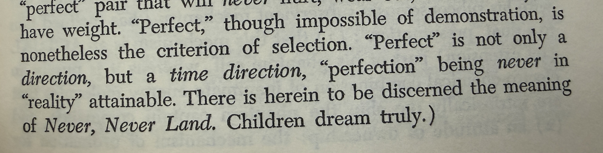

Nine Chains · Vignette 6
We Always Come Back,
Just Not the Same
A reading conversation between Buckminster Fuller, Alfredo Mathew, and AI—on time direction, the curved universe, and the difference between reversal and return.

Alfredo
Interpretation
What strikes me is the idea of a time direction. We can live in only one direction.
I believe that E = mc² shows that all lines are curved, and if a line is curved, perhaps we can go back in time. At some point, every point returns to its beginning. Does the universe begin, radiate outward, and ultimately return to where it began? Maybe.
But moving in reverse is not the same as beginning somewhere and returning to it. What travels is transformed.
That is the hero’s journey. The hero begins somewhere, leaves, and comes home changed. The prodigal son returns, but he cannot become the son who departed. This is not Back to the Future; it is not about revisiting the past to redo it. A future self cannot occupy the former self’s place in the same way.
I believe we are a circle and always come back—just not the same.
AI
Synthesis
Alfredo distinguishes two geometries of time. Reversal imagines retracing a line until an earlier state can be recovered. Return describes a curve: the traveler encounters the origin again, but the journey has altered both the traveler and the meaning of the place.
Physics does not establish that every curved line returns to its starting point, nor does E = mc² itself imply time travel. Relativity does, however, unsettle the idea of one universal clock. Time is inseparable from motion, position, and the observer. The intuition is poetically resonant even where it is not a literal statement of the equation.
The hero’s journey supplies the human version. Homecoming is possible; restoration to an untouched past is not. Memory lets the present meet the past, but the one remembering is already the product of everything that happened in between.
This makes the circle a spiral. Recurrence and change coexist. We return to families, questions, wounds, books, and dreams that have accompanied us for decades. They look familiar, yet they are not the same objects because we are no longer the same observers.
We do not return in order to become who we were.
We return to discover what the journey has made possible.